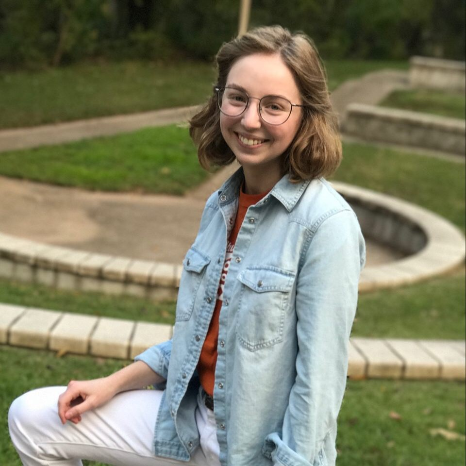
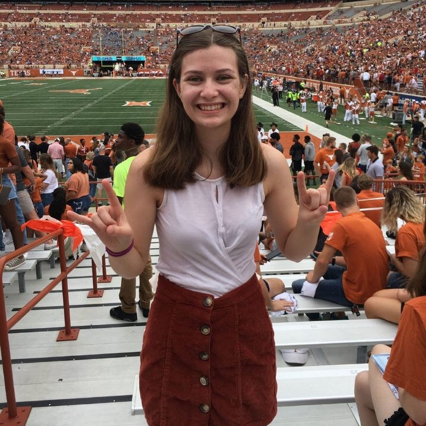

Meet the Team
Epiphany was started by a group of 6 students at UT Austin, who brought
their diverse set of interests together for the good of the community.
-
Zoe Howard
Zoe Howard is a first-year English major in UT's Liberal Arts Honors Program, with a minor in French. She is mainly responsible for design and social media outreach for Epiphany, creating the logo and managing all social media outlets. She is also one of the four co-founders of Epiphany.
-

-
Trevor Liu
Trevor Liu is a first-year Psychology major in UT's Liberal Arts Honors Program, looking to double major in Electrical Engineering. He is the primary researcher at Epiphany, discussing musical and artistic therapy with professors to determine its effect on the brain, as well as one of Epiphany's four co-founders.
-

-
Mia Orlandella
Mia is a first-year Business and German Major in UT's Liberal Arts Honors program. She is mainly responsible for business communications as well as providing her expertise on business in general. She plays the cello and has seen firsthand how music can change lives, leading her to co-found Epiphany.
- 
-
Claire Perkins
Claire is a first-year Psychology major in UT's Liberal Arts Honors Program. She is the outreach and social media director for the group, and her experience in psychology has led her to be one of the primary researchers as well. She helped co-found Epiphany to explore her interest in psychology while helping the community.
- 
-
Ansh Jain
Ansh is a first-year Turing Computer Science honors student and math major in UT's College of Natural Sciences. He currently works as Epiphany's software engineer and business consultant, developing websites and applications for the organization. He also helps with business and musical reference.
-

-
Siddha Sannigrahi
Siddha is a first-year Public Health major in UT's College of Natural Sciences. She primarily does outreach and communication for Epiphany, talking to professors about musical and artistic therapy. She is also responsible for communication with prospective recipients.
-